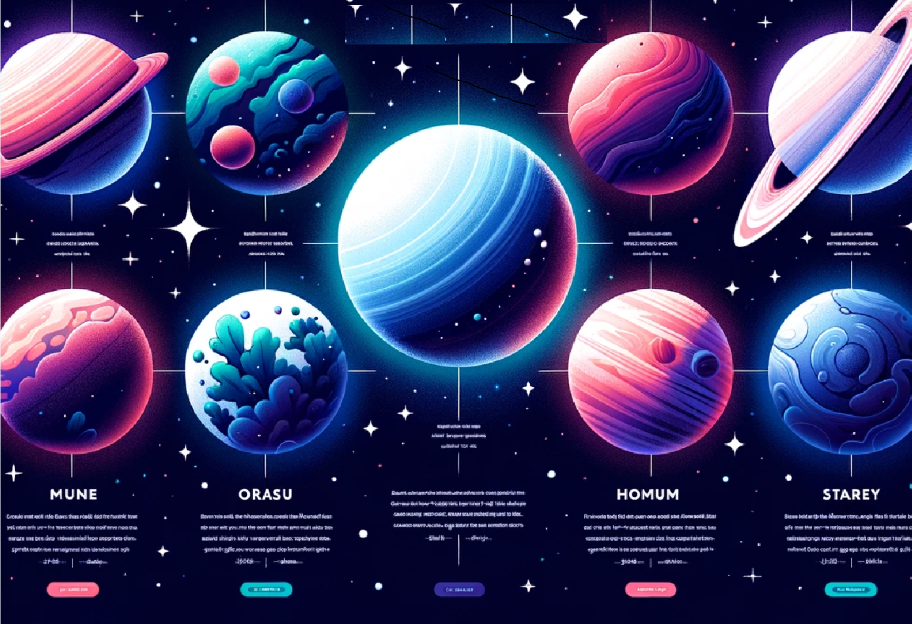

A comparison of four planets from our solar system.
| Planet | Mass | Diameter | Distance from Sun | Orbital Period | Number of Moons | Average Temperature | Atmospheric Composition |
|---|---|---|---|---|---|---|---|
| Earth | 5.972 × 10^24 kg | 12,742 km | 149.6 million km | 365.25 days | 1 | 14°C (avg) | N2, O2, Ar... |
| Mars | 0.64171 × 10^24 kg | 6,779 km | 227.9 million km | 687 days | 2 | -62°C (avg) | CO2, Ar, N2... |
| Venus | 4.867 × 10^24 kg | 12,104 km | 108.2 million km | 225 days | 0 | 467°C (avg) | CO2, N2... |
| Mercury | 0.33011 × 10^24 kg | 4,880 km | 57.9 million km | 88 days | 0 | 167°C (day) | O2, Na, H2... |
| Jupiter | 1,898 × 10^24 kg | 139,822 km | 778.5 million km | 11.86 years | 79 | -108°C (avg) | H2, He... |
| Saturn | 568.34 × 10^24 kg | 116,460 km | 1.4 billion km | 29.5 years | 82 | -138°C (avg) | H2, He... |
| Uranus | 86.813 × 10^24 kg | 50,724 km | 2.87 billion km | 84 years | 27 | -216°C (avg) | H2, He, CH4... |
| Neptune | 102.413 × 10^24 kg | 49,244 km | 4.5 billion km | 164.8 years | 14 | -214°C (avg) | H2, He, CH4... |